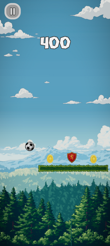
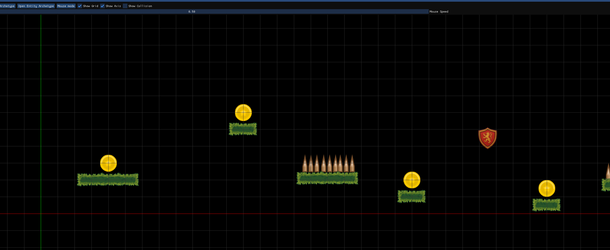
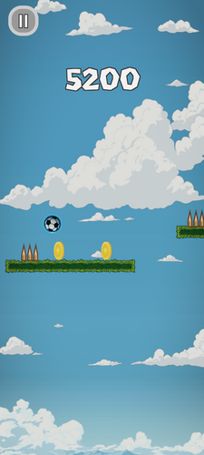
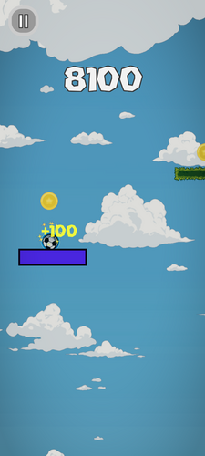

Releasing a Mobile Game with my Game Engine
TL;DR;
Around one year after my first post about what I learned from creating a game engine, I released a small mobile Android game built with it. The engine changed so drastically that it’s essentially a different codebase: C instead of C++, 2D instead of 3D, multi-backend rendering (Vulkan, OpenGL, OpenGL ES) instead of OpenGL-only, and zero third-party libraries. In this post I want to highlight what changed, why, and how the individual systems work.
You can download the game from itch.io/swipe-roll. It’s a endless platform scroller where the goal is to stay alive as long as possible.

Table Of Contents
- Introduction
- Simplicity Ships Games
- From C++ to C
- Memory Management with Arenas
- Multi-Backend Renderer
- Android Platform Layer
- Audio
- 2D Physics From Scratch
- Entities and Archetypes
- Final Words
Introduction

One year ago I published a blog post about my experience writing a 3D game engine from scratch in C++. Since then I released a mobile Android game with the engine. The game is a simple 2D platformer where you control a ball rolling across platforms, collecting rewards and avoiding obstacles.
The engine changed a lot since the first post. It’s basically a different codebase at this point.
- C++ to C: The entire engine is now written in C.
- OpenGL to multi-backend: Instead of a single OpenGL backend, the engine now supports Vulkan, OpenGL, and OpenGL ES with runtime fallback.
- Desktop to Android: The engine now runs on Android with in addition to desktop platforms like Linux and Windows.
- Several libraries to zero: I removed all third-party libraries. Physics, audio, image loading, font rendering, everything is written from scratch.
Below is a printout from cloc for the current engine and game:
-----------------------------------------------------------------
Language files blank comment code
-----------------------------------------------------------------
C 60 7333 2537 43244
C/C++ Header 31 1696 633 6049
GLSL 26 217 55 754
CMake 1 23 12 121
Kotlin 1 9 9 61
-----------------------------------------------------------------
SUM: 120 9283 3251 50249
-----------------------------------------------------------------
The line count grew from ~42K to ~50K compared to the old engine, but the code does much more: multi-backend rendering, 2D physics, audio, an Android platform layer, an editor, and the actual game. And it’s all C now instead of C++.
The rest of this post walks through each of these changes in detail.
Simplicity Ships Games

The overarching lesson I learned is that cutting complexity is what gets a game shipped. My old engine had general-purpose abstractions: a material system, a render graph, Jolt for physics, OpenAL for audio. Especially the render graph and material system were powerful, but they require a lot of thought to work well. If you are a single person to develop a game you can’t afford wasting time on a implementation whichs full potential you never need. Of course, third party libraries are always an option, but for this project I wanted to avoid them and they usually also carry hidden cost. Like for example compile time increases, binary size increases, and depending on their complexity it can be hard to debug them. I also learned that most things aren’t that difficult to write if you don’t want to make them general-purpose.
The new engine is game-specific. I only build what the game actually needs. No material system, no render graph, no third-party physics library. If I don’t need a feature, it doesn’t exist.
I also stopped using third-party libraries entirely. This might sound extreme, but it turned out to be liberating. I can focus for hours without looking up documentation on the internet. Everything is my code, and I understand all of it. When something breaks, I know where to look. When I need a feature, I build exactly what I need and nothing more.
The old engine’s material system is a good example. It was flexible and powerful. But every time I wanted to draw something, I had to look up how the material system worked by reading old code. I felt its complexity was slowing me down. For the 2D game I’m making, I didn’t need a generic material system. I replaced it with simple shaders and hardcoded uniform buffers. For a 3D game, I’d probably reintroduce a material system, but a much simpler one restricted to the actual functionality I need.
This approach wouldn’t work for every project. If I were building a 3D game with complex physics, I’d probably still use Jolt. But for a 2D mobile game, writing everything from scratch was absolutely feasible and taught me a lot in the process.
From C++ to C
The move from C++ to C happened gradually. In my old engine I was already writing “old-school C++” with no classes, no virtual functions, no constructors, no destructors, and no templates. The code was procedural with free functions and plain structs. The jump to C was small.
The practical trigger was arenas (more on those in the next section). Arenas work by resetting a pointer to free all allocations at once. This doesn’t work if your objects have destructors that need to run. My old codebase wasn’t using destructors anyway, so the transition was painless.
But there’s a deeper reason. In C, I think about what needs to happen. In C++, I was constantly tempted to think about which abstractions to build. Which base class to use, how to structure the type hierarchy, whether to use templates for generics. In C, there’s no temptation. I write the function, define the inputs and outputs, and move on.
What did I lose? Operator overloading for math types (I just use functions like vec2_add() now), templates (I don’t need them), and function overloading (I use different function names instead, like P2D_WorldAllocBodyBox and P2D_WorldAllocBodyCircle). What did I gain? Faster compile times, simpler mental model, and the ability to use arenas everywhere without worrying about object lifetimes.
This might be a personal thing, but I like the idea that I could write a compiler for the programming language I’m programming in. This is for example not feasible with C++. On top of that, my program will probably also compile many years from now as C remains a extremly stable target.
The compile times deserve a mention. The entire engine and game compiles from scratch in a few seconds. In C++, just including certain standard headers can add noticeable compilation time. In C, headers are lightweight and the compiler has much less work to do. This makes the edit-compile-run cycle very tight, which I find important for staying in flow.
Memory Management with Arenas
In the old engine I was using malloc and free everywhere, with a stack allocator for per-frame allocations. This worked, but tracking individual allocations was error-prone. I replaced all of that with arena allocators.
The core idea of arena allocations is the following: Most objects in a program don’t have unique lifetimes. They share lifetimes with many other objects. Think about a game level. The geometry, entities, physics bodies, they all live and die together. So why track them individually?
An arena is a big chunk of memory that you allocate from by bumping a pointer forward. When you’re done with everything in the arena, you reset the pointer. One operation frees everything. It’s almost like garbage collection, but with zero runtime overhead.
Here’s how it works in practice. When you push an object, the arena checks if there’s space in the current block. If there is, it checks if it needs to commit more physical memory. Then it bumps the pointer and returns your memory. If there’s not enough space, the arena allocates a new block and chains it in. These blocks form a linked list, so the arena can grow as needed.
// Create an arena
struct arena *permanent_arena = arena_alloc();
// Allocate from it (just bumps a pointer internally, very fast)
Entity *entities = arena_push_array(permanent_arena, Entity, 1024);
char *name = arena_push_cstr(permanent_arena, "Player");
char *formatted = arena_push_cstr_fmt(permanent_arena, "Level %d", levelNumber);
// When the level ends, clear everything at once
arena_clear(permanent_arena);
There are also _no_zero variants for when you don’t need the memory zeroed out:
// Zeroed allocation (safe default)
Entity *entity = arena_push_struct(arena, Entity);
// Uninitialized allocation (slightly faster, use when you'll fill everything anyway)
F32 *buffer = arena_push_array_no_zero(arena, F32, sampleCount);
You might wonder: what if you allocate too much and waste memory? On a 64-bit machine, there’s a difference between reserving address space and committing physical memory. The arena reserves a large address space (say 1 GB) but only commits physical memory as it’s actually used. If you reserve 1 GB but only use 50 MB, you only consume 50 MB of RAM. The rest is just reserved addresses, which cost nothing. This means you can be generous with arena sizes without wasting actual memory. In my game I actually targeted 32-bit machines as well. Old Android phones may still use 32-bit processors so I had to be careful with allocating not too much memory. I’m proud that the game and engine even run on a 12 year old Samsung S5 Mini.
There’s also a free list for reclaiming blocks. When you clear an arena and an entire block becomes unused, its memory gets decommitted and the block goes on the free list. Next time a block is needed, the free list is checked first. This way memory gets recycled without constantly asking the OS for new allocations.
Scratch Arenas
Often you need temporary allocations that only live for the duration of a function. Parsing a file, building a temporary string, processing input. With malloc, you’d allocate, use it, then remember to free it. With a scratch arena, you just allocate and forget.
void load_level(struct arena *arena, const char *path)
{
// Get a temporary arena for this function's scratch work
struct arena_temp scratch = arena_scratch_begin(&arena, 1);
// Allocate temporary strings, buffers, etc.
char *full_path = arena_push_cstr_fmt(scratch.arena, "%s/%s", data_dir, path);
// ... parse the file, allocate results into 'arena' ...
// All scratch allocations are freed automatically
arena_scratch_end(scratch);
}
Scratch arenas are thread-local. Each thread gets two of them. The reason for two is subtle: if function A uses a scratch arena and calls function B which also needs scratch memory, they can’t use the same arena or B would corrupt A’s data when it clears. With two arenas, you pass the one you’re using as a “conflict” and get the other one back. This handles arbitrary nesting depth.
// The conflict parameter ensures we don't get back the same arena
// that 'arena' might be pointing to
struct arena_temp scratch = arena_scratch_begin(&arena, 1);
Arenas fundamentally changed how I write code. I don’t think about individual allocations anymore. I think about lifetimes. Global arena for things that live forever. Level arena for things that live as long as the level. Frame arena for things that live one frame. Scratch arenas for everything else.
C++ developers might say: use smart pointers, they free automatically when an object goes out of scope. That’s true, but they still treat every allocation as independent, which means you’re still paying the cost of individual deallocations. With arenas, clearing an entire lifetime’s worth of allocations is literally resetting a pointer.
I highly recommend Ryan Fleury’s article “Untangling Lifetimes: The Arena Allocator” for a deeper dive into the theory of arenas.
Multi-Backend Renderer

The old engine had a single OpenGL backend with a complex deferred rendering pipeline, a render graph, and a custom shader language (.sfx files). The new engine has three backends (Vulkan, OpenGL, OpenGL ES), a simple forward 2D pipeline, and standard GLSL shaders.
Abstraction Layer
I wanted an API that’s easy to work with, hides backend-specific details, and supports multiple graphics APIs. The engine currently supports Vulkan and OpenGL ES (to run on older phones that don’t have Vulkan).
The backends are selected at runtime. In the graphics device initialization, I try one backend after another. If Vulkan succeeds, it gets used. If not, the engine falls back to OpenGL ES 3.2, then 3.0, then 2.0.
// Try backends in order of preference
B8 success = false;
if (!success) success = VK_Alloc(arena, windowHandle); // Vulkan
if (!success) success = GLES32_Alloc(arena, windowHandle); // OpenGL ES 3.2
if (!success) success = GLES30_Alloc(arena, windowHandle); // OpenGL ES 3.0
if (!success) success = GLES20_Alloc(arena, windowHandle); // OpenGL ES 2.0
Each backend populates a struct of function pointers, similar to a vtable. All rendering code goes through this table. The rest of the engine never knows which backend is active.
The core API pattern is: every GPU resource is a handle. For every resource there’s an _Alloc function, a _Release function, and a _CreateInfo struct. The benefit of handles over pointers is that it’s easy to check if they’re still valid. This design gives the backend implementation freedom without forcing a specific pattern.
Resources include images, buffers, shaders, pipelines, render passes, framebuffers, and shader materials. Shader materials are my abstraction for Vulkan descriptor sets. They specify which resources a shader needs to draw. For example, if a shader expects a texture, the shader material contains the actual texture handle. There are two types: regular shader materials (persistent) and frame shader materials (created every frame and freed automatically at frame end). Frame shader materials are what I use in the sprite renderer where bound resources change every frame.
Pipelines and render passes map directly to their Vulkan equivalents. A pipeline contains all the state needed for drawing (shader, blend state, rasterization state). A render pass encapsulates the framebuffers and ensures memory synchronization between passes.
In OpenGL, pipelines, render passes, and shader materials don’t exist natively. I emulate them by storing the state and applying it when draw calls are issued.
I try hard to expose only what I actually need. If the engine doesn’t use a feature, it’s not in the public API. For example, there’s no explicit command buffer resource. Internally the G_Cmd* functions work on a command buffer, but the user doesn’t need to know about that.
One interesting decision was to expose Vulkan’s push constants in the abstraction. Push constants are special uniforms that are very cheap to update, typically used for per-draw-call data. In OpenGL they don’t exist directly, but they map nicely to regular uniforms.
// Load a shader (vertex + fragment)
G_ShaderHandle shader = G_ShaderAlloc(vfs, S("sprite.vert"), S("sprite.frag"));
// Create a pipeline with rendering state
G_PipelineCreateInfo pipelineInfo = {0};
pipelineInfo.shaderHandle = shader;
pipelineInfo.renderPassHandle = renderPass;
pipelineInfo.blendEnable = true;
// ... other state ...
G_PipelineHandle pipeline = G_PipelineAlloc(&pipelineInfo);
// Create a GPU buffer
G_BufferCreateInfo bufferInfo = {0};
bufferInfo.size = sizeof(SpriteDrawCommand) * MAX_SPRITES;
bufferInfo.type = G_BufferType_Storage;
G_BufferHandle spriteBuffer = G_BufferAlloc(&bufferInfo);
On top of resource management, there are command functions (G_Cmd*) for rendering. They begin and end render passes, bind pipelines and buffers, set uniforms, and issue draw calls.
Here’s what a typical frame looks like:
// Begin frame, get swapchain image index
U32 imageIndex;
G_BeginFrame(&imageIndex);
// Begin render pass
G_CmdBeginRenderPass(&renderPassInfo);
G_CmdBeginDebugLabel(S("Sprites"));
// Upload sprite data to GPU buffer
void *mapped = G_BufferMap(spriteBuffer);
MemoryCopy(mapped, spriteDrawCommands, spriteCount * sizeof(SpriteDrawCommand));
G_BufferUnmap(spriteBuffer);
// Set pipeline and state
G_CmdSetPipeline(pipeline);
G_CmdSetViewport(&viewportInfo);
G_CmdSetScissor(&scissorInfo);
// Bind resources and draw
G_CmdSetShaderMaterialFrame(frameMaterial);
G_CmdSetPushConstants(&pushConstantsInfo);
G_CmdDraw(&drawInfo);
G_CmdEndDebugLabel();
G_CmdEndRenderPass();
// Submit to GPU
G_SubmitFrame();
After I had the Vulkan implementation in place, adding the OpenGL implementation took only two evenings with almost zero changes to the public API.
2D Canvas and Sprite Batching
All 2D rendering goes through a canvas module. The API is straightforward: allocate a canvas, call G_CanvasNewFrame at the start of each frame, issue draw commands, and call G_CanvasSubmit at the end.
// Allocate a canvas
G_Canvas *canvas = G_CanvasAlloc(arena, vfs, renderPass, samplesCount, layerCount);
// Every frame:
G_CanvasNewFrame(canvas, frameArena);
// Draw things
G_CanvasDrawImage(canvas, textureHandle, position, rotation, scale, pivot);
G_CanvasDrawRectangleSolid(canvas, color, rectangle, rotation, scale, pivot);
G_CanvasDrawText(canvas, font, position, color, S("Score: 100"));
// Submit everything to the GPU
G_CanvasSubmit(canvas, viewportWidth, viewportHeight);
Under the hood, the canvas batches sprites to minimize draw calls. Draw calls are one of the biggest performance bottlenecks on mobile GPUs. Without batching, a scene with 1,000 sprites using 50 unique textures would need 1,000 draw calls. With batching, it might only need 5-10.
The batching works by binding multiple textures per draw call (up to 10 per batch). When a sprite is added, the canvas checks if its texture is already bound in the current batch. If yes, the sprite joins the batch using that texture index. If the texture isn’t bound but there are free slots, it gets added to the next available slot. If all 10 slots are full, a new batch starts.
The result is that the sprite draw commands array gets divided into contiguous batches. Batch 0 might contain sprites 0-450 using textures A, B, and C. Batch 1 might contain sprites 451-890 using textures D, E, F, and G. Each batch becomes a single instanced draw call.
There’s a limitation: the system assumes textures cluster naturally in submission order. If sprites with many unique textures are submitted in alternating order, you’ll get poor batching. The fix would be to sort draw commands by texture before submitting, but that complicates render order (which matters in 2D). For my game this isn’t an issue because I naturally group rendering: all UI elements share textures, and world objects like platforms and rewards share textures too.
All sprite data is stored in a fixed-size array of 16,384 entries. I could have made this dynamic, but the fixed size gives predictable memory usage and eliminates allocation stalls during gameplay. If you exceed the limit, new sprites simply won’t draw and you get a console warning. I’ve never come close to hitting this in practice.
The sprites are drawn using instanced rendering. Instead of sending vertex data for each quad, I issue a single draw call with 6 vertices (two triangles) and an instance count equal to the number of sprites. The vertex positions are generated procedurally in the vertex shader using bitwise operations on the vertex index. No vertex buffer needed. This reduces memory bandwidth and increases performance.
Each sprite’s transformation matrix, UV coordinates, color, texture index, and blend mode are packed into a GPU storage buffer. The vertex shader fetches the draw command using gl_InstanceIndex, offset by the batch’s draw offset stored in push constants.
The fragment shader samples textures using explicit conditionals instead of dynamic array indexing. While modern GLSL supports dynamic indexing, I found explicit conditionals to be more compatible across different mobile GPU drivers.
For rounded rectangles (UI elements), the fragment shader uses a signed distance function that produces smooth anti-aliased corners without requiring special geometry or textures.
For a typical frame in my game, I end up with about two batches and single-digit draw calls.
Shader Reflection
Writing shaders for multiple backends is painful because every API expects a different shader language. Vulkan wants SPIR-V, OpenGL wants GLSL. I solved this by writing all shaders in Vulkan GLSL and cross-compiling them.
The shader compilation pipeline looks like this:
- Write shaders in Vulkan GLSL
- Compile GLSL to SPIR-V using glslang
- Use SPIRV-Cross to generate OpenGL GLSL from the SPIR-V
- Use SPIRV-Cross to extract reflection data (descriptor bindings, push constants, vertex attributes)
- Store the reflection data in a simple C struct and dump it to disk
The reflection data is especially useful for Vulkan. To illustrate why, here’s a simple shader with a uniform buffer, a storage buffer, a texture, and push constants:
layout(set = 0, binding = 0) uniform CameraData {
mat4 viewProj;
} camera;
layout(set = 0, binding = 1) buffer InstanceData {
mat4 transforms[];
} instances;
layout(set = 1, binding = 0) uniform sampler2D colorTexture;
layout(push_constant) uniform PushConstants {
uint instanceIndex;
vec4 tintColor;
} pushConstants;
Without reflection, creating the Vulkan pipeline layout for this requires about 60 lines of C code: creating descriptor set layout bindings for each resource, grouping them into sets, defining push constant ranges, and finally creating the pipeline layout. And that’s for a shader with only four resources. Every time I add a texture or buffer to a shader, I’d need to update bindings, arrays, and counts by hand. If anything gets out of sync, I get validation errors or undefined behavior.
With reflection, the engine reads the shader’s resource requirements at load time and creates the pipeline layout automatically. The reflection data is stored in a simple C struct with no pointers and no dynamic memory, so it can be dumped straight to disk with a single file write and loaded back with a single read.
When loading a shader, the Vulkan backend reads the reflection data from both vertex and fragment shaders, merges any shared resources (the same buffer might be used in both stages), and generates the descriptor set layouts and pipeline layout automatically. No manual descriptor set layout code. No push constant setup. Adding a new resource to a shader requires zero changes to the C code.
For OpenGL, the reflection data is used to figure out uniform and vertex attribute locations. It’s also used to emulate push constants (which don’t exist in OpenGL) by mapping them to regular uniforms. The reflection data stores the name, offset, size, and type of each push constant property, which is needed because older OpenGL versions only support named uniforms.
Android Platform Layer
Android applications don’t have a main() function. Instead, they use an activity lifecycle model where the system tells your app when it can start, pause, resume, and stop. I used Google’s native app glue library to bridge this to C code.
The lifecycle handling was the most challenging part. The app needs to respond to events like:
APP_CMD_INIT_WINDOW: The rendering surface is ready. Create the graphics context.APP_CMD_DESTROY: The app is shutting down. Release everything.APP_CMD_PAUSE: The app lost focus. Pause audio, stop rendering.APP_CMD_RESUME: The app regained focus. Resume audio, restart rendering.
The surface can be destroyed and recreated at any time (when the app goes to the background and comes back). This means the graphics context needs to handle surface recreation gracefully. Getting this right took quite some iteration.
static void handle_app_cmd(struct android_app *app, int32_t cmd)
{
switch (cmd)
{
case APP_CMD_INIT_WINDOW:
// Surface is ready, create or recreate the graphics context
if (app->window != NULL)
{
g_windowHandle = OS_WindowHandleFromAndroid(app->window);
G_Resize(g_windowHandle, width, height, true /* recreate surface */);
}
break;
case APP_CMD_PAUSE:
A_MixerPauseAll();
g_isPaused = true;
break;
case APP_CMD_RESUME:
A_MixerResumeAll();
g_isPaused = false;
break;
}
}
Input handling on Android is also different from desktop. Touch events come in as motion events that need to be translated into the engine’s input system.
I had to integrate with Android’s JNI (Java Native Interface) to access things like the application data directory, settings directory, and screen density. The screen density is needed to calculate the correct DPI for rendering UI at the right size. The actual Android Activity is written in Kotlin and loads my native library with System.loadLibrary. It also handles the splash screen and immersive mode (hiding the system UI bars).
Another challenge was the Vulkan surface. On Android, the native window can be created, destroyed, and recreated as the app moves between foreground and background. The Vulkan surface needs to be destroyed and recreated in sync with the native window.
Audio
In the old engine I used OpenAL. For a 2D game, OpenAL is overkill. It’s designed for 3D spatial audio with listener positions, distance attenuation, and HRTF. None of that is needed for playing a coin collect sound effect.
I replaced it with a simple software mixer. The mixer runs on a separate thread and mixes all active audio tracks into a single output buffer. The platform layer feeds this buffer to the OS-specific audio API.
I implemented multiple audio backends depending on the platform:
- AAudio: The modern Android audio API (Android 8.0+). Uses a data callback pattern for low-latency streaming.
- OpenSL ES: The older Android audio API. Uses buffer queues. Needed for phones that don’t support AAudio.
- PulseAudio: For Linux desktop.
The audio API separates the concept of audio data from playback tracks. An A_Audio is the loaded sound data. An A_Track is an active playback instance. Multiple tracks can reference the same audio data.
// Load audio data
A_Audio *coinSound = A_AudioAllocFromVfs(arena, vfs, S("/audio/coin_collect.wav"));
// Create a track for playback
A_Track *coinTrack = A_TrackAlloc(arena);
A_TrackSetAudio(coinTrack, coinSound);
A_TrackSetGain(coinTrack, 0.8f);
// Play it (false = don't loop)
A_TrackPlay(coinTrack, false);
// Background music with looping
A_Track *musicTrack = A_TrackAlloc(arena);
A_TrackSetAudio(musicTrack, backgroundMusic);
A_TrackPlay(musicTrack, true);
The mixer itself is simple. It iterates over all active tracks, decodes samples from their audio sources, mixes them together (multiplying by each track’s gain), and writes the result to the output buffer. The output format is 44.1 kHz, 2 channels, 16-bit signed integer (though AAudio also supports 32-bit float and will prefer that when available).
The audio backends are loaded dynamically at runtime (using dlopen on Android) so the engine doesn’t need to link against libraries that might not be available on older devices. AAudio tries to use float format first and falls back to 16-bit integer.
I used SDL_mixer as inspiration for my implementation. The SDL libraries are in general a great source of information to learn about platform code.
2D Physics From Scratch
In the old engine I used Jolt for 3D physics. Writing a 3D physics engine from scratch is a huge undertaking. But 2D physics are very doable.
I used Box2D Lite as inspiration and implemented a full 2D rigid body physics system.
The simulation loop works like this: each frame, the engine detects all colliding pairs of bodies, generates contact manifolds (the points and normals of contact), and then iteratively resolves the contacts by applying impulses until the bodies separate or reach equilibrium. The key concepts are:
- Rigid bodies: Boxes and circles with mass, friction, and rolling resistance. A mass of zero means the body is static (like a platform).
- Collision detection: SAT (Separating Axis Theorem) for box-box collisions, and analytical tests for circle-box and circle-circle. I also have a broad phase using a BVH (Bounding Volume Hierarchy) to quickly reject pairs that are far apart before running the more expensive narrow phase tests.
- Contact resolution: A sequential impulse solver. For each contact point, the solver computes the relative velocity of the two bodies at the contact, projects it onto the contact normal and tangent, and applies corrective impulses to push the bodies apart while respecting friction.
- Accumulated impulses: Instead of computing impulses from scratch each iteration, the solver accumulates them across iterations. This is critical for stacking scenarios where bodies rest on top of each other.
- Warm starting: The solver reuses impulses from the previous frame as initial guesses. This dramatically speeds up convergence because the physics state usually doesn’t change much between frames.
- Position correction: Baumgarte stabilization applies a small bias to the velocity constraint to gradually push apart bodies that have sunk into each other. Without this, stacked objects slowly drift through each other.
// Create the physics world
P2D_World *world = P2D_WorldAlloc(arena);
// Create a box body
P2D_BodyDef bodyDef = {0};
bodyDef.mass = 1.0f;
bodyDef.friction = 0.3f;
bodyDef.collisionFlags = P2D_CollisionFlag_Solid;
P2D_BodyHandle platform = P2D_WorldAllocBodyBox(
world,
(Vec2){0.0f, -2.0f}, // position
0.0f, // rotation
(Vec2){4.0f, 0.5f}, // extent (half-size)
&bodyDef
);
// Create a circle body
P2D_BodyHandle ball = P2D_WorldAllocBodyCircle(
world,
(Vec2){0.0f, 5.0f}, // position
0.0f, // rotation
0.5f, // radius
&bodyDef
);
// Step the simulation
P2D_WorldStepSimulation(world, deltaTime);
// Read back positions for rendering
Vec2 ballPos = P2D_BodyPosition(world, ball);
F32 ballRot = P2D_BodyRotation(world, ball);
The solver runs a fixed number of iterations per step (10 by default). More iterations give more accurate results at the cost of performance. For a 2D platformer, 10 is more than enough.
// These defines control the solver behavior
#define P2D_ENABLE_WARM_STARTING 1
#define P2D_ENABLE_POSITION_CORRECTION 1
#define P2D_ENABLE_ACCUMULATE_IMPULSES 1
#define P2D_ITERATIONS 10
Contact callbacks allow the game code to react to collisions. I use this for things like collecting coins, triggering obstacles, and detecting when the player lands on a platform.
// Set a callback that fires when two bodies collide
P2D_BodySetContactCallback(world, ballHandle, on_ball_contact, (U64)gameState);
Bodies can also be flagged as triggers instead of solid colliders. Triggers detect overlap but don’t generate physical responses. I use these for collectible items: when the player overlaps a coin trigger, the game awards points and destroys the coin without any physical collision happening.
// Solid bodies generate contact responses
bodyDef.collisionFlags = P2D_CollisionFlag_Solid;
// Triggers only detect overlap, no physical response
bodyDef.collisionFlags = P2D_CollisionFlag_Trigger;
The physics system also supports collision queries for gameplay checks, like testing if there’s a body at a certain position:
P2D_BodyHandle hitBody;
if (P2D_CheckCollisionCircle(world, position, radius, NULL, 0, &hitBody,
P2D_CollisionFlag_Solid))
{
// Handle collision
}
// Or check against multiple bodies at once
P2D_BodyHandle hitBodies[16];
U32 hitCount;
P2D_CheckCollisionCircleAll(world, position, radius, hitBodies, &hitCount);
The world can also be shifted, which I use for the endless scrolling in my game. Instead of moving the camera, I shift the entire physics world to keep coordinates manageable.
Entities and Archetypes
There are several common approaches to entity systems. The classic OOP approach uses inheritance: a base Entity class with virtual functions, and derived classes for each entity type. A more modern approach is ECS (Entity Component System), where entities are IDs, components are plain data packed tightly in memory, and systems operate over them. ECS is often praised for being cache-friendly, but writing a good ECS is surprisingly complex and for many games entity handling just isn’t the bottleneck.
I went with a third approach: the megastruct. This is the same pattern used by early Doom and Quake. One big struct holds every property an entity could possibly need, and a kind field determines behavior.
typedef struct Entity
{
char name[64];
EntityKind kind;
// Transform
Vec2 position;
Vec2 scale;
F32 rotation;
// Physics
EntityBodyKind bodyKind;
Vec2 collisionExtent;
F32 collisionRadius;
F32 mass;
F32 friction;
// Graphics
AM_TextureHandle textureHandle;
I32 textureRows;
I32 textureColumns;
F32 animationLength;
// Gameplay
F32 bounceFactor;
F32 shakeTime;
I32 spawnProbability;
I32 rewardAmount;
Vec2 targetPosition;
F32 targetMoveSpeed;
B8 bSemiSolid;
// Behavior
void (*update)(Entity* entity, Scene* sceneContext, F32 deltaTime);
void (*draw)(Entity* entity, Scene* sceneContext, G_Canvas* canvas, F32 deltaTime);
void (*trigger)(Entity* entity, Scene* sceneContext, EntityHandle triggeringEntity);
B8 bEnabled;
} Entity;
Some people would object: “This isn’t flexible. It wastes memory. It’s not cache-friendly.” And technically, that’s all true. But in practice it doesn’t matter. My Entity struct is around 380 bytes. Even with 10,000 entities, that’s only 4 MB. A single texture in the game is larger than that.
The benefit is simplicity. No component systems, no archetype tables, no query iterators. Just a struct and some function pointers. If I ever hit a performance bottleneck, I can split the struct or refactor specific systems later. In reality, I probably never will.
Each entity kind has a spawn function that sets up its initial state, like a lightweight constructor. The spawn function assigns the right update, draw, and trigger function pointers for that entity kind. The kind enum includes EntityKind_Platform, EntityKind_Reward, EntityKind_Obstacle, EntityKind_Magnet, EntityKind_Timer, and a few others.
void EntitySpawnPlatform(EntityHandle entityHandle, Scene *scene)
{
Entity *entity = SceneAccessEntity(scene, entityHandle);
entity->update = PlatformUpdate;
entity->draw = PlatformDraw;
entity->trigger = NULL;
// Set up physics body based on entity properties
// ...
}
Iterating over all entities in a scene is straightforward with a macro:
SCENE_FOR_EACH(scene, entity)
{
EntityUpdate(entity, scene, deltaTime);
}
Property Descriptors
One pain point with megastructs is serialization. Every time I add a property, I’d have to update the serialization code, the deserialization code, and the editor code separately. I solved this with property descriptors.
Each property is described once in a global array:
EntityPropertyDescriptor g_entityPropertyDescriptors[] = {
{
"Kind",
EntityPropertyType_Enum,
offsetof(Entity, kind),
(EnumToStringFunc)EntityKindToString,
(StringToEnumFunc)StringToEntityKind,
g_entityKindStrings,
ArrayCount(g_entityKindStrings),
},
{
"Position",
EntityPropertyType_Vec2,
offsetof(Entity, position),
},
{
"Scale",
EntityPropertyType_Vec2,
offsetof(Entity, scale),
},
// ... more properties ...
};
When serializing an entity, I iterate over this array, compute the memory address using offsetof, and write the value based on its type. Deserialization works the same way in reverse. Adding a property means adding one entry to this array. Everything else (serialization, deserialization, editor) picks it up automatically.
Archetypes
On top of entities, I use archetypes. An archetype is a blueprint: a collection of pre-configured entities that can be instantiated at runtime. The game sections that make up the endless gameplay are archetypes.
Archetypes are defined in text files:
Entities: [
{
Kind: "Platform"
Position: [ 0.0 0.0 ]
Scale: [ 1.0 1.0 ]
BodyKind: "Box"
CollisionExtent: [ 4.0 1.0 ]
BounceFactor: 1.5
Friction: 0.2
Texture: "Bounce.sd"
}
{
Kind: "Reward"
Position: [ 0.0 2.0 ]
Scale: [ 0.5 0.5 ]
BodyKind: "Circle"
CollisionRadius: 0.5
Texture: "Coin.sd"
SpawnProbability: 80
RewardAmount: 100
}
]
The format is similar to JSON but less verbose (my own custom format). At runtime, the engine loads these files and spawns the entities. Changes can be tracked in version control, and iterating on level design is fast because I can just edit a text file and reload.
// Load and spawn an archetype
EntityArchetypeCacheSpawnEntity(
archetypeCache,
scene,
S("SkyHighClimb"),
spawnPose,
outEntities,
outEntitiesCapacity,
&outEntitiesCount
);
Final Words
I learned a lot since my first post. I’m very happy with how the engine evolved and proud that I was able to ship a game with it. It will be for sure not my last game and will now try to create a more complex 3D game. But I like to go in small steps.
I really like that I control the whole stack. It’s a lot of fun and keeps my motivation high.
I’ve glossed over many details and didn’t write about some parts. Like for example the particle system, the custom UI system, and font rendering. I may cover this in another post.